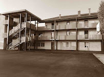

COLLÈGE (2015-2019)

J’ai passé mes 4 années de collège au collège catholique privée de Saint-Joseph à Saint-Didier sur Chalaronne, j’y ai choisi une option supplémentaire basé sur le théâtre pendant mes 2 premières années , durant mon année de 3ème j’ai effectué un stage d’observation dans une entreprise d’assistance et dépannage informatique nommé MicroXpress où j’y ai appris les rudiments du dépannage informatique chez les entreprises et les particuliers, à la fin de mon année de 3ème j’ai obtenu mon Diplôme National du Brevet avec la mention Bien